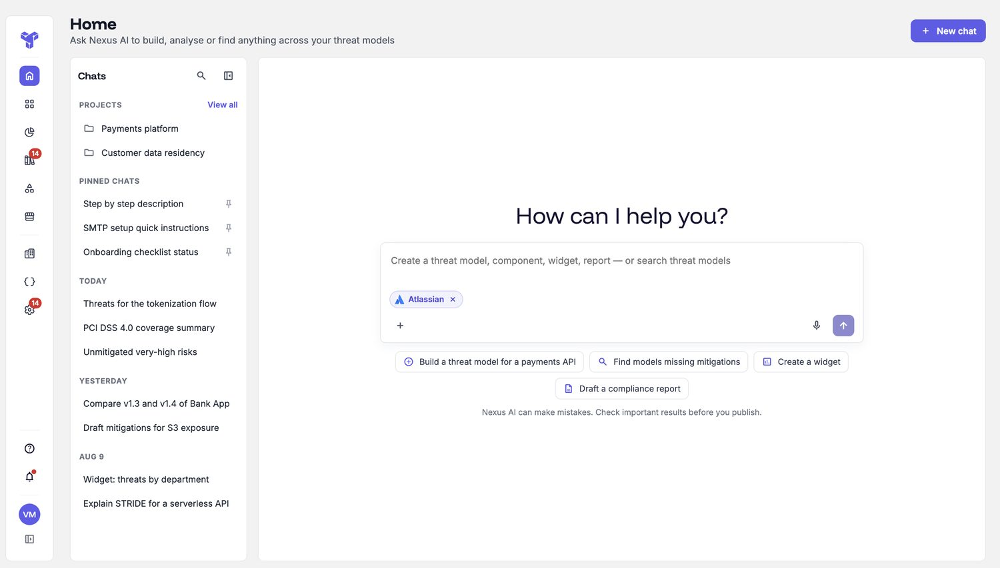
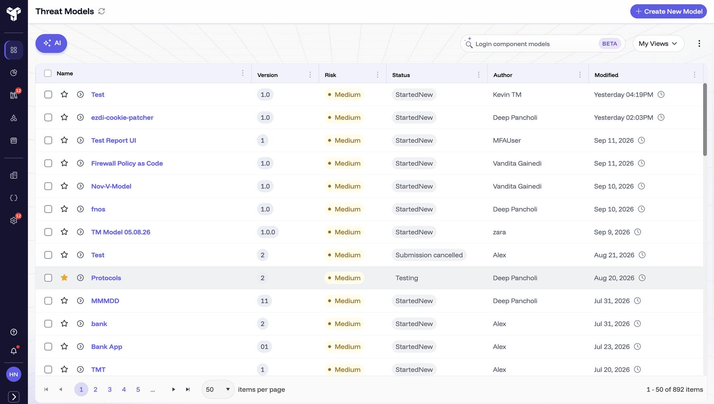
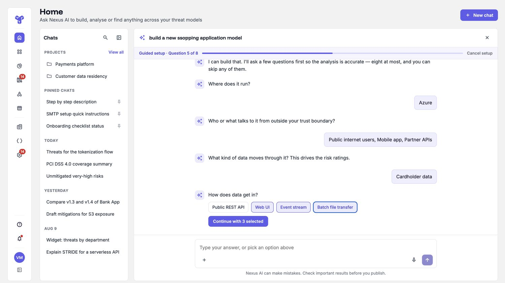
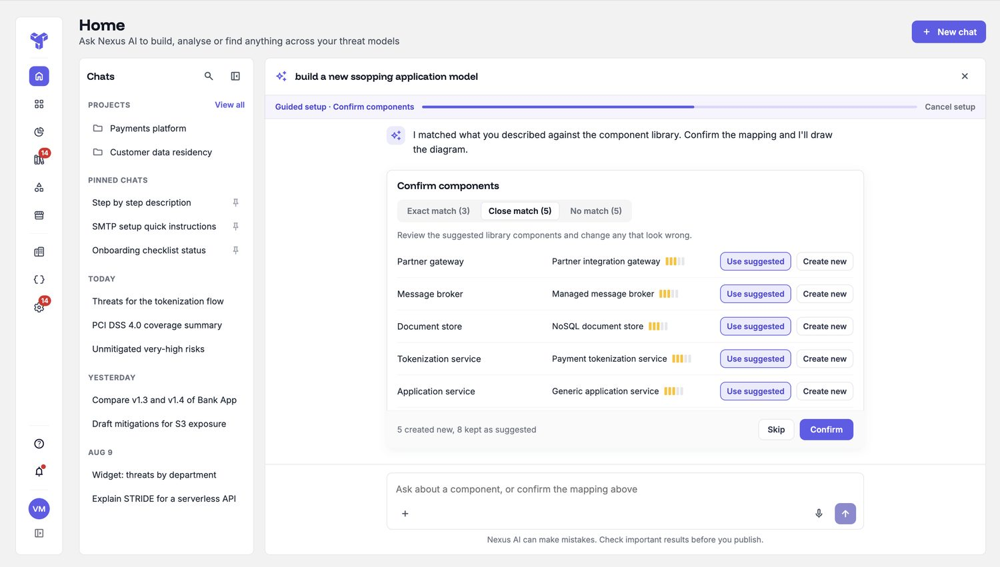
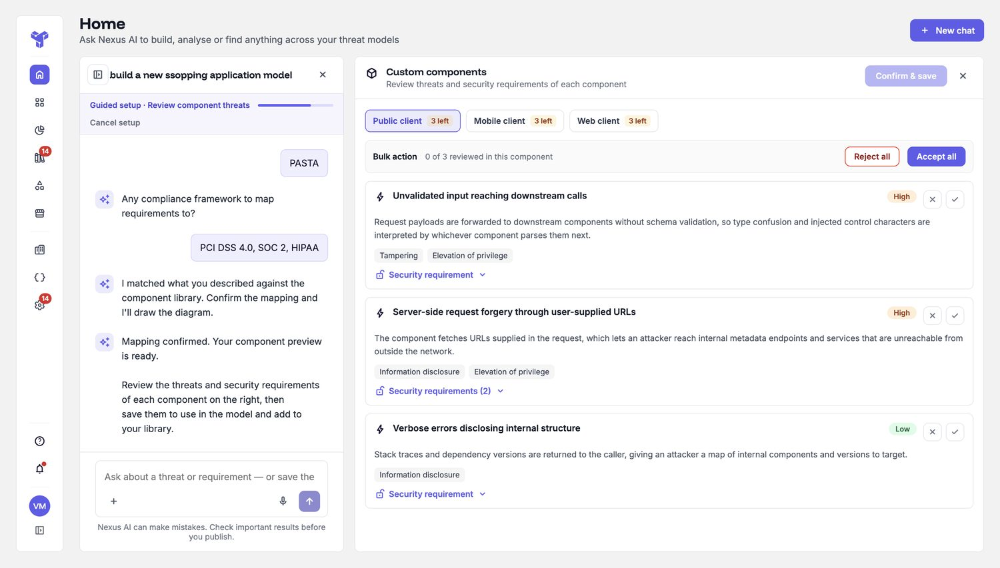
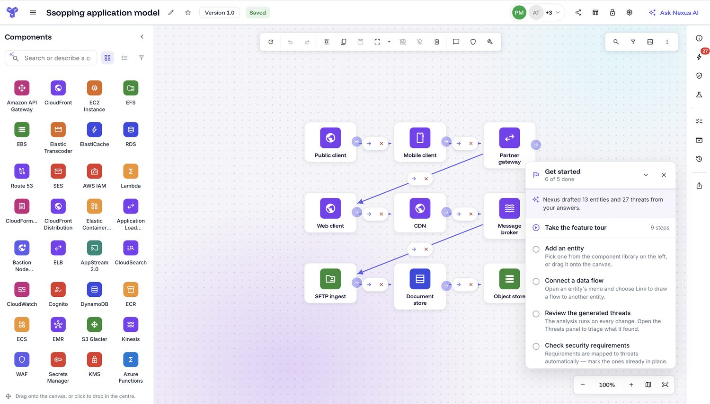
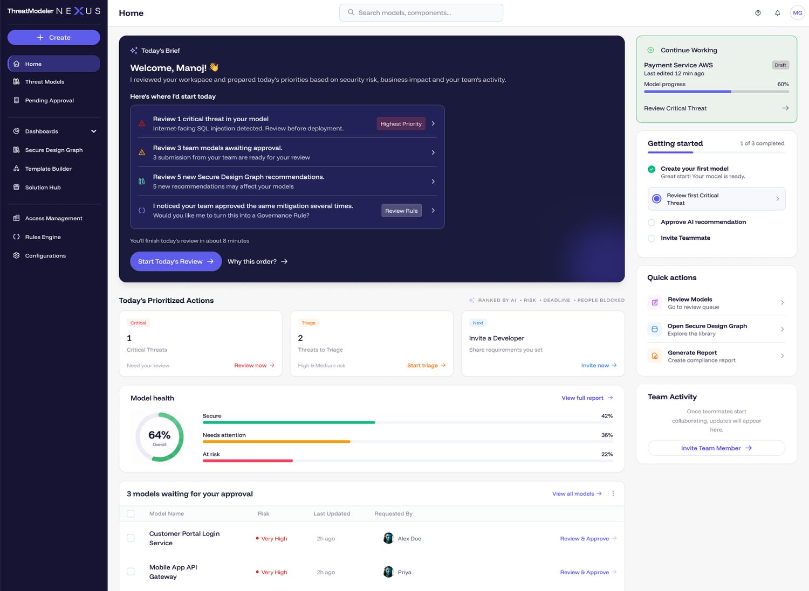

ThreatModeler NEXUS · AI-native · Home experience
ThreatModeler is a security tool where teams map out how an app could be attacked. Its home screen used to be a long list of past work, so you'd land there and have to go hunting. I turned it into a simple "what do you need?" screen: you say what you need — start a model, find something, pull a report — and it responds. Because security architects, developers, DevOps engineers and administrators all use it for different things, one shared list never fit anyone well, so this adapts to the person. The AI does the heavy lifting, but the person always makes the important calls.

ThreatModeler is a tool security teams use to map out how an app could be attacked, and plan how to defend it. The Home screen is where everyone lands and starts. I redesigned it — from a plain list of past work into a screen you can simply talk to: say what you need (start something, find something, get a report), and it responds.
You landed on a long list of past work and had to dig for anything. The best features were buried in menus. And the AI help was scattered — a different assistant on each screen, so most people never found half of it. On top of that, four very different roles all got the same generic screen.

Three things: get new people to a real result faster; pull the scattered AI into one place; and let the screen adapt to whoever's using it, instead of one list for everyone. With one rule underneath it all — the AI helps, but a person always makes the security decisions.
I spoke with the people who watch users struggle — customer success, the onboarding team, product and engineering — and with several customers. Four things came up again and again.
The AI was scattered. Each screen had its own assistant, tucked in a different spot, so people rarely found it.
The Home just sat there. A list with no next step, so people logged in unsure where to go.
People wanted a quick way in. A guided start, not a blank canvas and long lists of things to read.
One screen, very different people. A developer, a security architect and a security leader all landed on the same page — each needs a different starting point.
I mapped the whole journey as a single flow. You describe your system, the AI asks a few quick questions, matches the parts to its library, drafts the risks — and you check its work before anything becomes part of your model.
Rather than a blank canvas or full auto-magic, I designed a short, guided build where the AI proposes and the person stays in charge.
The build opens with a short, skippable set of questions — where the app runs, what data it handles, who can reach it — so the result is accurate from the start.

The AI matches the parts you described to its library and shows how sure it is — a strong match, a close one, or none — so you accept it or make your own. The risks it drafts work the same way: accept, adjust, or reject each one.


What began with one sentence lands as a working model on the canvas, ready to keep building on — and you can connect outside sources (like GitHub or Jira) so it stays in step with the real system.

Before the chat-style Home, I designed and tested another idea: a dashboard that ranks your day for you and tells you what to do first.

I showed both to the same people. The chat Home won, for reasons that matter in a security tool:
The honest read The dashboard was good, well-liked work. But betting the front door on the AI being right felt wrong here, so I let it go.
One more trade-off The guided questions add a little effort up front. I kept them because that's what makes the result accurate — and made them skippable for experts.
I ran the direction past the same customers and internal stakeholders in a handful of sessions, watching them try real tasks. They backed it — and I then built it with a developer over about a month, fixing other rough edges along the way. Worth being precise: that was hands-on testing plus a green light to ship, not a large controlled study.
Measured in the product after launch. I read these as strong signals, not proof of cause — so I'm careful with them.
| Metric | Before | After | Change |
|---|---|---|---|
| Time for a new user to build their first model (typical) | ~24 hours | ~2 hours | much faster |
| A big, consistent drop. One caveat: the "before" group included long-time users who'd never built one, which stretches the old number — so I call it strong movement, not a clean 12×. | |||
| In use across | — | 59 organizations | shipped & adopted |
Measured in PostHog after launch · strong directional signal, not a controlled test.
The Home is now a single place where any role — architect, developer, DevOps, admin — says what they need and gets it, with the AI helping and the person always making the security calls. It pulled the product's scattered AI into one surface, and it's live across dozens of organizations.